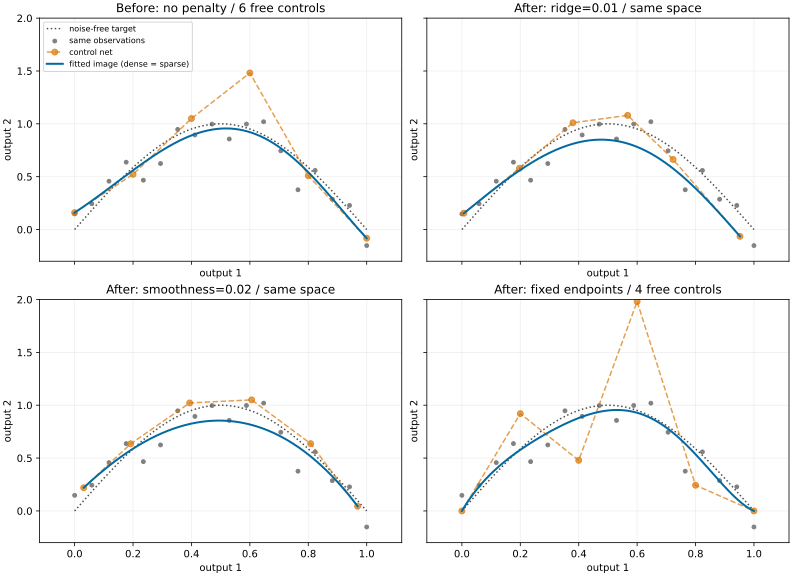

Regularization and numerical evidence
The regression objective in original output units is
D is the shared coefficient-net incidence operator. Fixed rows are eliminated
exactly, including their contribution to penalty right-hand sides:
from torch_bsf import FixedControls, QuadraticPenalty, fit
from torch_bsf.solvers import DenseLeastSquares
result = fit(space, samples,
fixed=FixedControls({0: [1., 2.]}),
penalty=QuadraticPenalty(ridge=.01, smoothness=.02),
solver=DenseLeastSquares(diagnostics="full"))
Dense SVD and sparse LSMR solve the same augmented problem without forming normal equations. Both return a CPU float64 model. Replicating every sample or scaling every observation weight equally leaves the objective unchanged.
result.diagnostics.data describes identifiability from observations alone;
system describes the regularized system. Ridge can stabilize the latter
without making the former identifiable. Basic diagnostics leave expensive
extra data-only SVD fields as None. Full dense diagnostics compute them.
Sparse estimates never pretend to be exact SVD ranks or condition numbers.
When and why to regularize
A high-degree model can fit noise and move far from the observations in poorly sampled regions. Too few independent observations can also leave several coefficient matrices equally good. Before adding a penalty, check whether a lower degree or better domain coverage solves the problem.
ridge penalizes the squared distance of every control point from the
output origin. It makes the free-column augmented system full rank when its
weight is positive, even when the observation matrix is rank deficient.
It also biases the fitted image toward zero: the origin must have a meaningful
interpretation in your output coordinates.
smoothness penalizes differences between adjacent control points.
For a simplex, adjacent multi-indices differ by moving one unit between two
components. For a product, that move occurs within one factor. A shared edge
in the global coefficient net is counted once. Thus
Increasing its weight draws neighboring controls together, suppressing variation but also potentially removing real features. This is a coefficient-net penalty, not an integrated curvature penalty or a condition guaranteeing C1 continuity across glued cells. Constant coefficients are in its nullspace, so smoothness alone need not remove every unidentifiable direction.
What changes in the Bezier space?
Both penalties keep the same domain, degree, Bernstein basis and number of
controls. They select a different model inside the same polynomial space.
They do not add cells or lower the degree. In contrast, FixedControls
restricts admissible coefficient matrices to an affine subset: known endpoint
values hold exactly, while a penalty only encourages a preference. See
Fixed controls for choosing fixed rows.


Fig. 13 Before (top left) and after, with the same 18 observations and degree 5. Orange polygons show the six control points; blue curves show their images in output space. Ridge pulls controls toward the origin; smoothness reduces neighboring differences; fixing both endpoints leaves four free controls. Dense and tightly converged sparse predictions agree in all four cases. The displayed weights are illustrative, not universal defaults.
Reproduce the figure with
python examples/generate_regularization_comparison.py after installing
pytorch-bsf[plot,sparse]. The script checks dense/sparse prediction agreement.
Choosing weights and interpreting errors
Start with zero penalties and inspect held-out prediction error and data rank.
Try zero and logarithmically spaced positive weights with the same validation
splits, for example 0, 1e-5, 1e-3, 1e-1. Expand the range if the best value
lies at an endpoint. Select using held-out error, then refit all observations
with the chosen weights. See Cross-validation and degree search for validation results.
There is no noise-level-only rule such as “0.01 is light regularization”: degree,
topology and the number of control-net edges also affect penalty size. Recheck
weights after changing the space. ridge depends on output translation;
smoothness depends on differences and is translation invariant. Explicit output
transformations must also transform fixed values; see Output scaling.
Samples(..., weights=w) weights observation rows, not output columns.
Use larger relative weights for observations you trust more or regions you
intend to emphasize; zero excludes a row from the loss. Weights must be finite,
nonnegative and have positive sum. Scaling all weights equally, or duplicating
every observation together with its weight, leaves this normalized objective
unchanged. Duplicating only a subset changes its relative influence.
For m output columns, data_loss is the weighted squared vector error;
data_mse = data_loss / m. ridge_penalty and smoothness_penalty include
their weights, and objective sums all three terms. A lower penalized
objective is not automatically a lower prediction error. Compare validation
errors in the units and output coordinates relevant to your application.
Reading numerical evidence
Let A be the observation basis and F the free coefficient rows. Data
diagnostics refer to diag(sqrt(w / sum(w))) @ A[:, F]. System diagnostics
refer to that matrix with ridge and smoothness rows appended and fixed columns
eliminated. Fixed values change the right-hand side, not those free columns.
Dense regression uses CPU float64 LAPACK gelsd on the augmented system.
diagnostics.driver records the driver, or None when all rows are fixed.
For singular values s, the rank threshold is
rcond * s[0]; with rcond=None, the relative cutoff is machine epsilon
times the larger matrix dimension. Increasing rcond discards more weakly
determined directions and can change the minimum-norm solution. Keep the default
unless a problem-specific numerical threshold is justified.
The reported coefficient condition number is infinite when rank is below the
number of free columns, including underdetermined matrices. Otherwise it is
the ratio of largest to smallest singular values. None means uncomputed,
including condition information in all-fixed problems; it never means zero.
Unregularized basic diagnostics reuse the system SVD. With penalties, request
DenseLeastSquares(diagnostics="full") only when you need the additional
data-only SVD: it costs time and can allocate a dense observation matrix.
result.success concerns solver termination, not goodness of fit or
identifiability. LSMR reports stop codes and iterations for each output. Failed
convergence emits ConvergenceWarning and stays visible in the result.
Use result.require_success() when failure should raise.
Invalid inputs raise immediately. Numerical decomposition failure, non-finite
solver output or objective overflow produces success=False and
status="numerical_failure", with the same warning/require_success() policy.
If no finite iterate exists, diagnostics.solution_available is false:
the model preserves fixed controls but zeros free coefficients in unavailable
output columns as a finite placeholder. Its metrics describe that placeholder,
not an optimum; do not use it for prediction. Finite LSMR iterates stopped by
iteration or condition limits remain available, but are not certified solutions.
Failure of the optional data-only SVD instead produces
status="diagnostic_failure". The successfully computed model, objective and
system diagnostics remain available; data diagnostics stay uncomputed. Per-output
solver success remains true, while overall success is false because the
requested diagnostics could not be completed.
The CLI returns exit status 1 for failed results and includes model_saved
in its JSON report. When solution_available is false it leaves the destination
untouched, including an existing model file. MLflow likewise records failure
metrics and diagnostics, with bsf.solution_available=False, but does not write
a model artifact. A finite iterate or a model with failed optional diagnostics
remains available for explicit inspection and persistence.
An overflowing augmented RHS is rejected per output (rhs_overflow); other
output columns are still solved and retained. Iterative evidence for a column
that was not attempted is None, rather than a fabricated stop code or zero
iterations. With all controls fixed, the finite model is already completely
known and stays available even if its objective exceeds float64 range. Overall
success is then false for the metric failure, while per-output termination
still records all_fixed.
import torch
from torch_bsf import BezierSpace, Samples, QuadraticPenalty, fit
from torch_bsf.solvers import DenseLeastSquares
space = BezierSpace.simplex(1, degree=3)
data = Samples([[1., 0.], [1., 0.]], [[1.], [2.]])
result = fit(space, data, penalty=QuadraticPenalty(ridge=.1),
solver=DenseLeastSquares(diagnostics="full"))
result.require_success()
assert result.diagnostics.driver == "gelsd"
assert result.diagnostics.data.rank == 1
assert result.diagnostics.data.condition_number == float("inf")
assert result.diagnostics.system.rank == 4
The solve succeeds in this example because ridge stabilizes the system. The data still identify only one coefficient direction: neither solver success nor the regularized rank supplies the missing observations.